Getting started with Paisafy
A hands-on walkthrough, screen by screen. Each screen is an interactive tour: tap the glowing pin, or use Next, to step through what every part does. Follow it in order to set everything up, or jump to the part you need.
Set up your accounts
Add your accounts and read your balances and net worth.
2Record & organize spending
Log transactions by hand or with AI, and keep categories tidy.
3Plan your month
Set budgets and declare the bills you pay each month.
4Reach your goals
Create goals and read the insights that look ahead.
Set up your accounts
Accounts are the foundation. Once they're in, every balance, budget and insight is built from them.
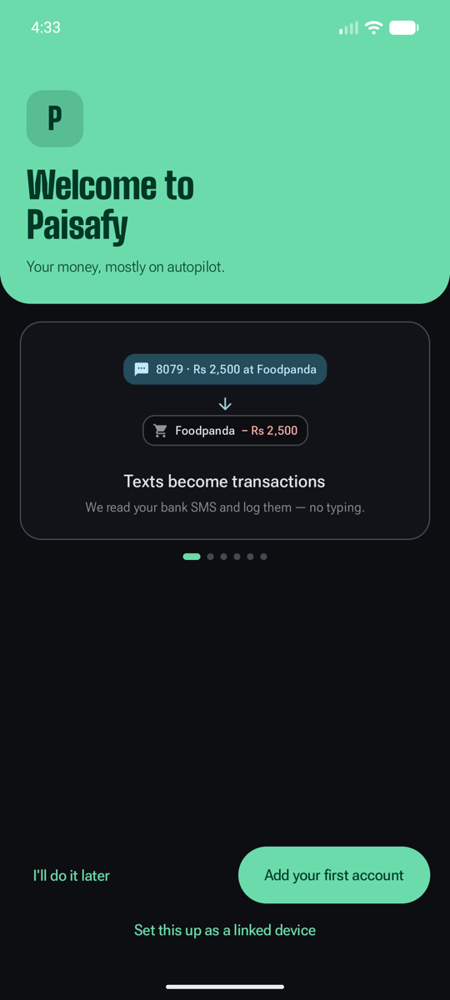
flag Start here
Open the app
There's no sign-up and no account to create. On first launch you can jump straight into adding an account, set it up as a linked second device, or skip and explore. Everything you add stays on your phone.
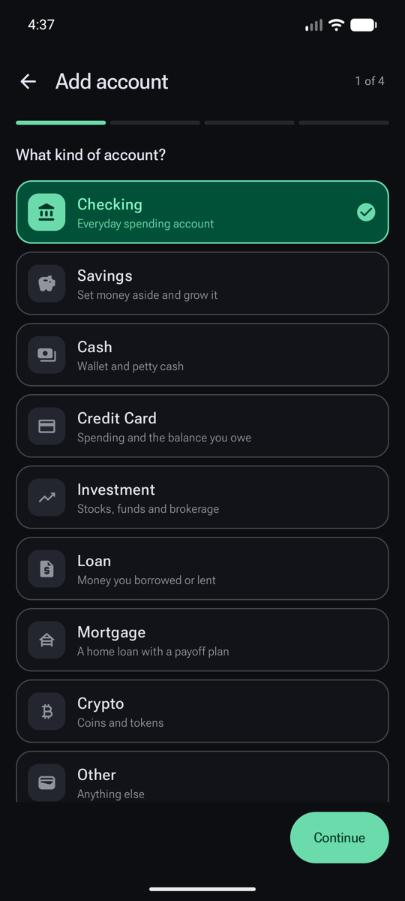
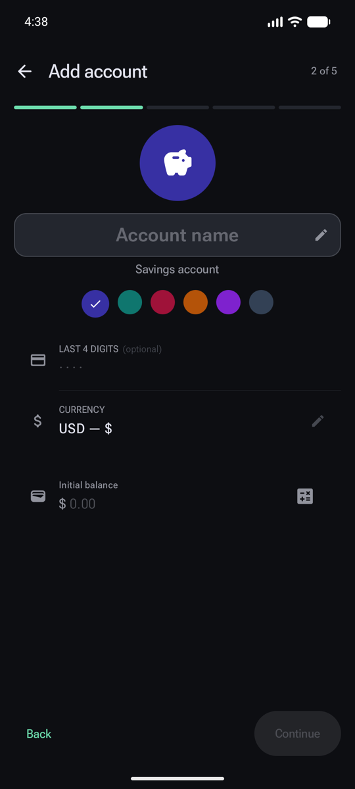
add_circle Create
Add your first account
Tap Add account and walk through a short wizard. Step one picks the type; the rest fills in the details.
- Pick the type. Checking, Savings, Cash, Credit Card, Investment and more. The type decides how the account behaves.
- Loans are special. A Loan or Mortgage tracks what you borrowed (or lent) and its payoff schedule.
- Name it so you recognize it in lists.
- Give it a colour to tell accounts apart at a glance.
- Currency. Each account can have its own; cross-currency totals convert automatically.
- Starting balance. Enter what's in it today (a calculator is built in). Savings and loans add an interest-rate step next.
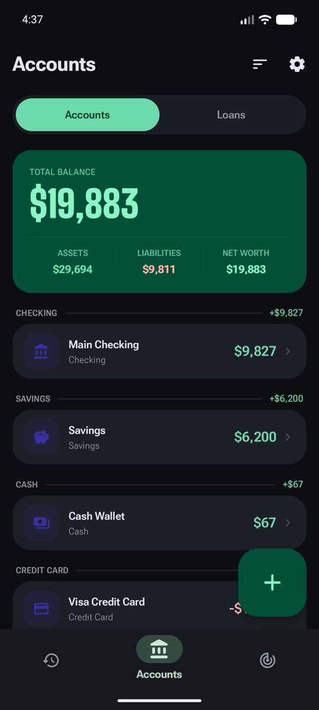
visibility Read it
The Accounts screen
The middle tab in the bottom bar. It rolls all your accounts into one picture.
- Accounts and Loans live on separate tabs.
- Total balance across everything, in your main currency.
- Assets, liabilities and net worth at a glance.
- Accounts group by type, each showing its live balance. Tap one for actions.
- Add another account any time with the + button.
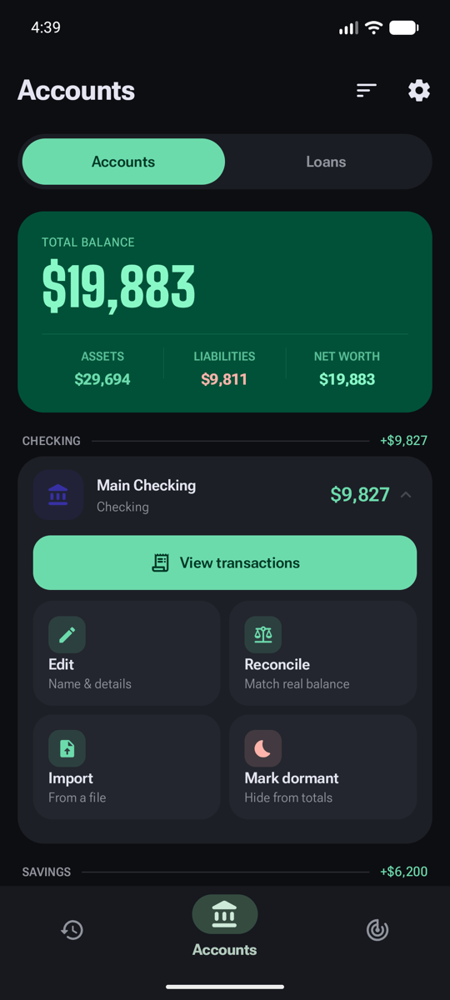
touch_app Tap an account
What you can do with an account
Tapping an account opens its quick actions.
- View transactions filtered to just this account.
- Reconcile to match the app's balance to your real statement in one tap.
- Import a statement as PDF, image or CSV; a preview shows what will be added.
- Mark dormant to keep an old account on file but out of your totals.
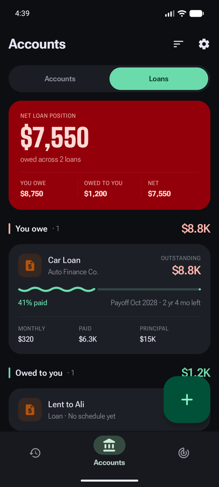
visibility Read it
The Loans tab
Loans get their own tab so they don't muddy your day-to-day balances.
- Net loan position nets what you owe against what you're owed.
- You owe / owed to you / net split out clearly.
- Payoff progress shows how far along you are and the payoff date.
- Monthly, paid and principal for the full picture of each loan.
Record & organize spending
Log what you spend, however you like, and keep it tidy with categories.
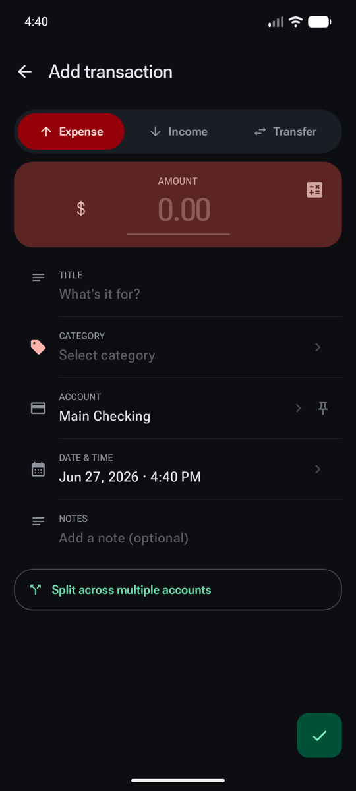
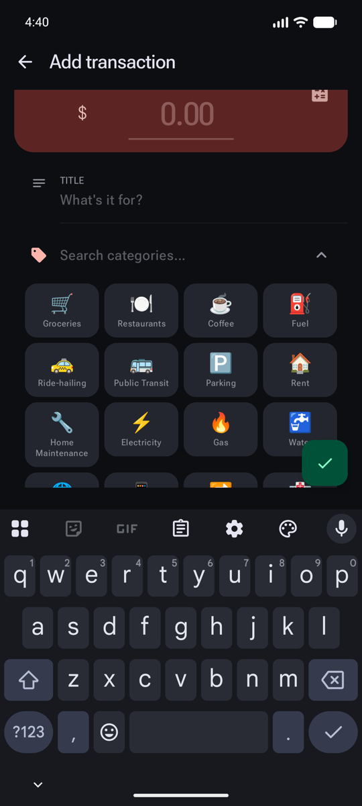
add_circle Create
Add a transaction by hand
Tap + on the Transactions tab. The same form handles money out, money in, and moves between your own accounts.
- Expense, Income or Transfer at the top.
- Amount, with a built-in calculator for quick maths.
- Category — tap to open the picker.
- Account it came from (you can pin a default).
- Date, notes and split across accounts if you need them.
- Pick a category from the grid, or search by name.
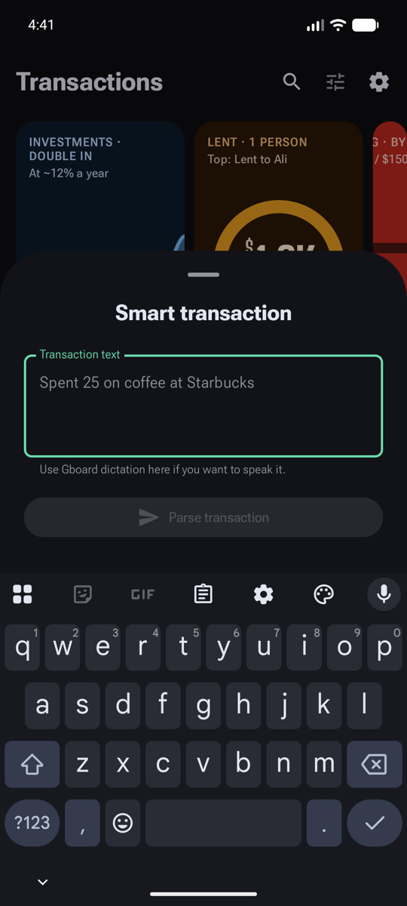
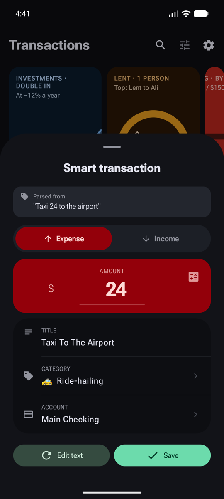
auto_awesome Create with AI
Or just type it in plain words
Tap the ✨ button and describe the spend the way you'd say it. Paisafy reads it and fills the transaction in for you.
- Type or paste anything — “lunch 18 at Subway”, or a whole bank SMS.
- Parse it.
- The amount is filled in from your text.
- The category is inferred (here, “taxi” became Ride-hailing).
- Check and save — or tap Edit text to tweak the wording.
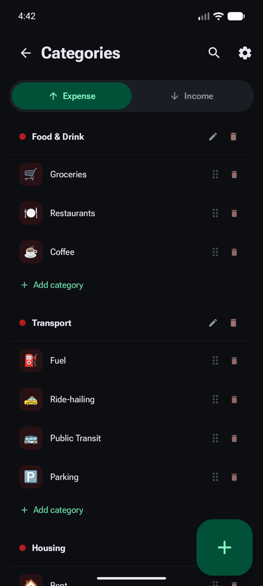
visibility Organize
Categories & groups
Open Categories from the Plan tab's top bar. Paisafy starts you with a sensible set you can shape however you like.
- Expense and Income categories on separate tabs.
- Groups (like Food & Drink) gather related categories.
- Drag to reorder or delete with the icons on each row.
- Add a category to any group.
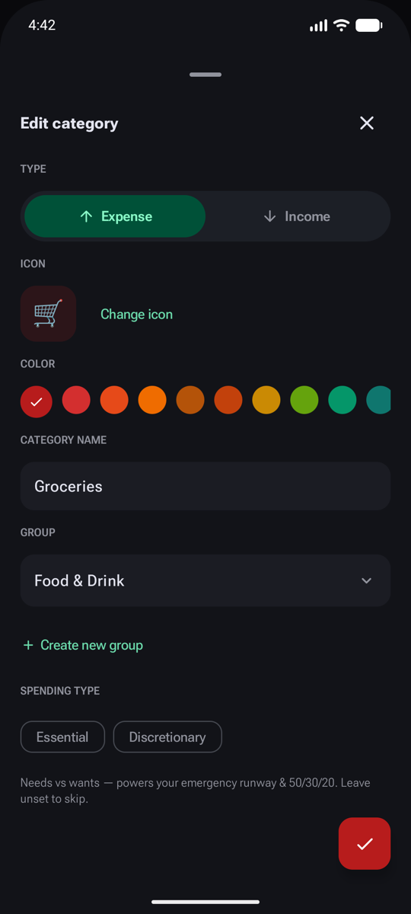
edit Make it yours
Editing a category
Tap any category to open its editor.
- Change the icon from the emoji picker.
- Pick a colour.
- Move it to another group, or create a new one.
- Mark Essential or Discretionary — this powers the 50/30/20 view and your emergency runway.
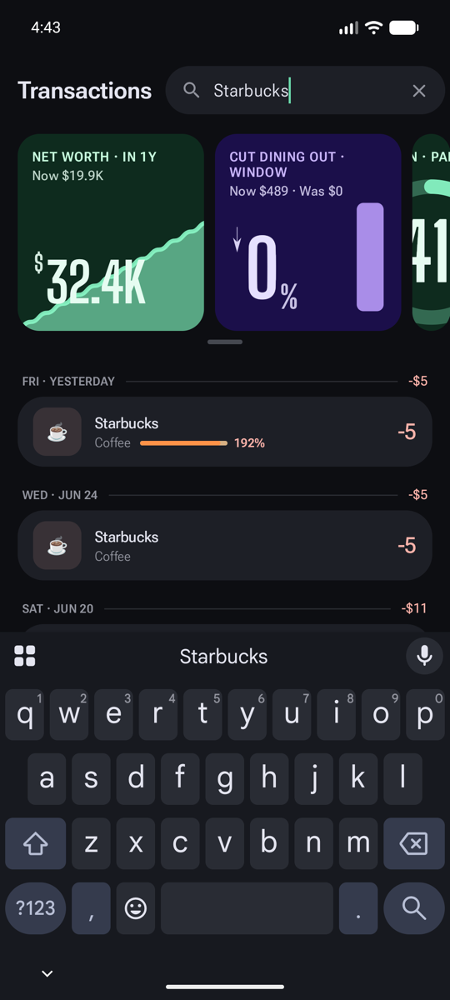
search Find & fix
Search, filter and bulk edit
From the Transactions tab you can quickly narrow the list down.
- Search by title, note or category.
- Filter by date range, category or account.
- Clear to return to the full list.
Plan your month
Set spending caps and tell Paisafy about your recurring bills, then let it keep score.
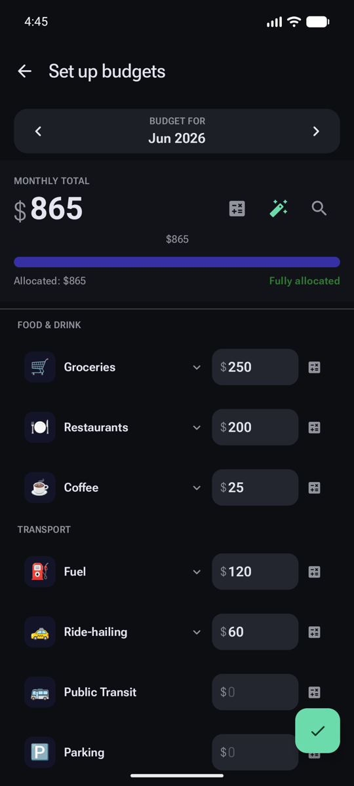
add_circle Create
Set your budgets
On the Plan tab's Budgets section, tap Edit budgets to allocate a cap to each category.
- Choose the month you're budgeting for.
- Set a monthly total to budget against.
- Auto-distribute to split it across categories as a starting point.
- Fine-tune each cap — watch the “allocated” figure as you go.
- Save.
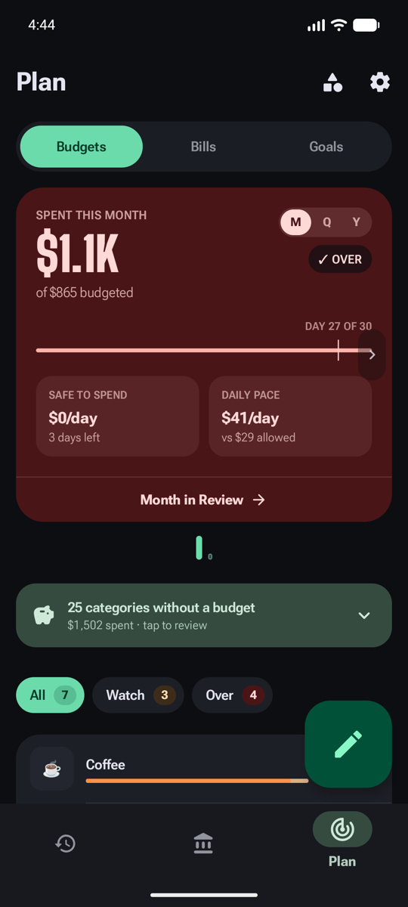
visibility Read it
How the month is going
The Budgets screen turns your caps into a live read on the month.
- Budgets, Bills and Goals share this Plan tab.
- Spent vs budgeted for the whole month, with an over-budget warning.
- Switch the period between month, quarter and year.
- Daily pace shows what you're spending per day vs what's safe.
- Filter chips jump to budgets to Watch or that are Over.
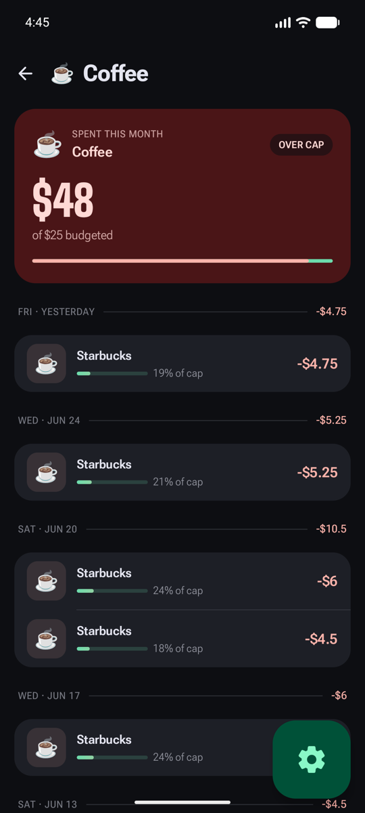
visibility Drill in
One budget, in depth
Tap any budget to see exactly what's driving it.
- A clear over-cap badge when you've gone past the limit.
- Spent vs cap for this category.
- Every payment lists its share of the cap.
- Budget settings let unspent roll over, or carry overspend forward.
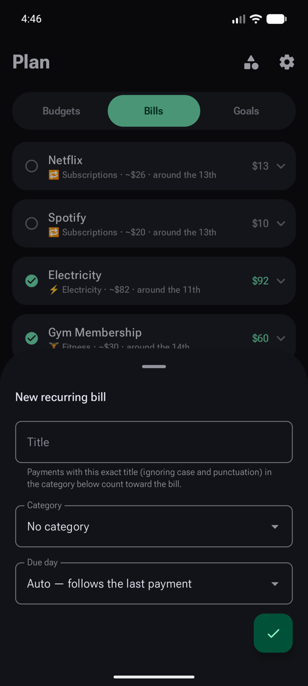
add_circle Create
Declare a recurring bill
On the Bills section, tap New bill. Paisafy then watches for the payment each month.
- Title — matches payments with this exact title.
- Category it belongs to.
- Due day — pick one, or let it follow your last payment.
- Create the bill.
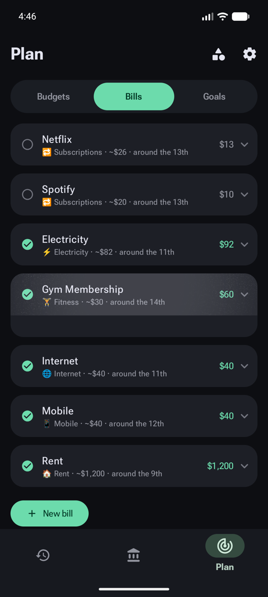
visibility Read it
What's paid, what's due
Bills automatically mark themselves paid when a matching payment lands.
- Paid or not-paid-yet status on every bill.
- Category, typical amount and due day at a glance.
- What you actually paid, with history when you expand it.
- Add more bills any time (Pro lifts the 5-bill limit).
Reach your goals
Set targets that matter, then let Paisafy's insights tell you where you're headed.
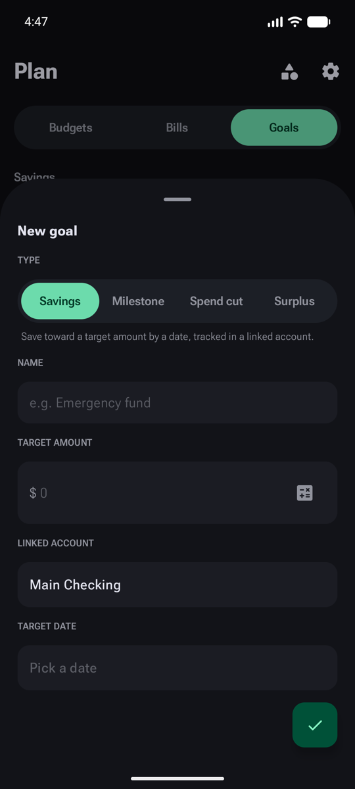
add_circle Create
Create a goal
On the Goals section, tap Add goal and pick the kind that fits.
- Savings — save toward a target amount by a date.
- Milestone — track linked balances toward a one-off target.
- Spend cut — spend less than you did in a past window.
- Surplus — automatically bank whatever's left in your budget.
- Set the target, linked account and date, then create.
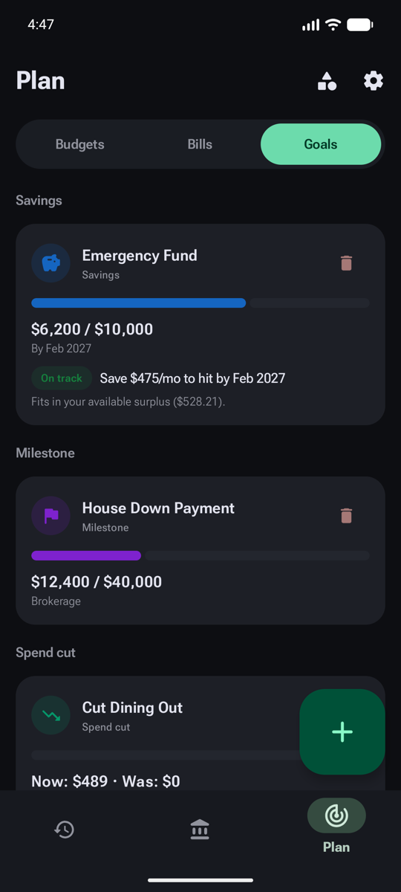
visibility Read it
Tracking your goals
Goals group by type, each with a progress bar.
- Each goal shows its name and type.
- Progress toward the target.
- On-track guidance — what to save each month to hit it in time.
- Add as many goals as you like.
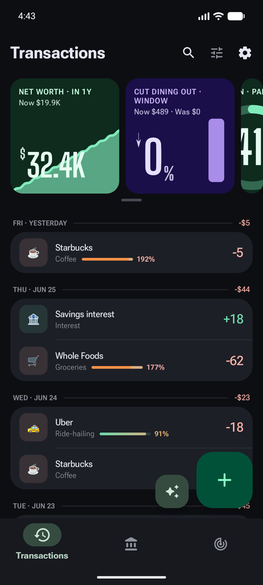
trending_up Look ahead
The Smart Overview
At the top of the Transactions tab, Paisafy ranks a carousel of cards that read your money and project where it's headed.
- Ranked insight cards — net worth, savings, bills, loans and more.
- Swipe through them; the very last tile opens the full grid.
- Below, your transactions — tap to edit, long-press to select.
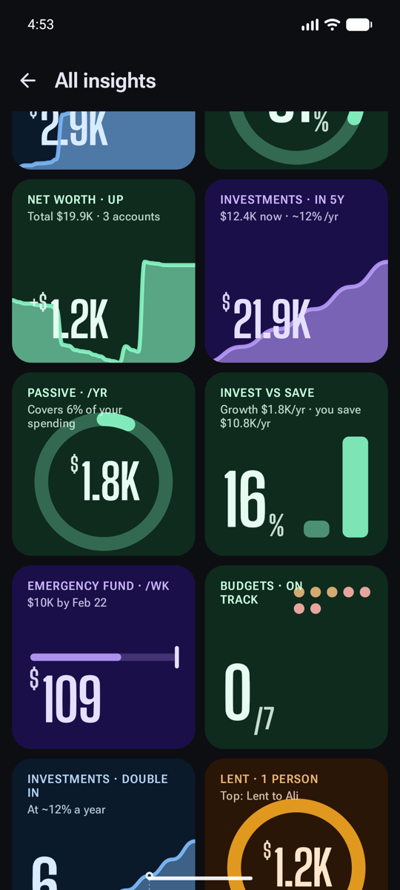
grid_view Go deeper
All insights
The full grid covers spending, savings, investments, bills and goals.
- Net-worth trajectory over the year ahead.
- Investment growth projections.
- Passive-income coverage of your spending.
- Goal pace — what each goal needs from you.
- Money lent out, tracked per person.
That's the core of Paisafy. Everything you add lives on your device, so explore freely — and if you get stuck, the FAQ covers privacy, backups, Pro and more.